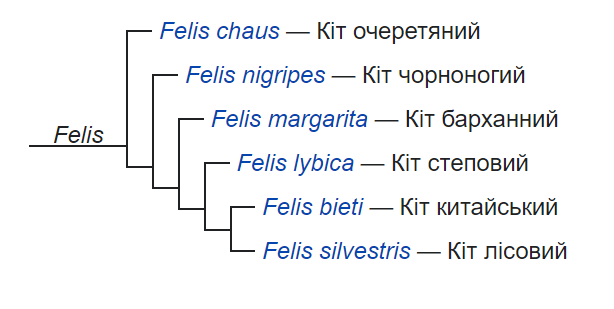

Етимологія
Праслов *kotъ, можливо, запозичене з лат. cattus — прямо або через германське посередництво; подібна назва для кота існує й у не індоєвропейських мовах (араб. qitt — «кіт»), що дає підставу розглядати цю назву як давнє мандрівне слово суспільно-етнічних культур Європи й Азії[7].
Види та підвиди
Рід Кіт
- вид Кіт очеретяний (Felis chaus)
- підвид Felis chaus chaus Schreber, 1777
- підвид Felis chaus affinis Gray, 1830
- підвид Felis chaus fulvidina Thomas, 1928
- вид Кіт чорноногий (Felis nigripes)
- вид Кіт барханний (Felis margarita)
- підвид Felis margarita margarita Loche, 1858
- підвид Felis margarita thinobia (Ognev, 1927)
- вид Кіт степовий (Felis lybica)
- підвид Felis lybica lybica Forster, 1780
- підвид Кіт свійський (Felis lybica catus Linnaeus, 1758)
Філогенія
Філогенетичне древо роду Felis

Психологія
Деякі рослини, наприклад, валеріана або котяча м'ята, виділяють речовини, які впливають на кішок (особливо на самців) наркотичним шляхом. Проте не всі коти реагують на їхній запах, і не на всіх ці рослини впливають однаково. У деяких котів валеріана може викликати отруєння.